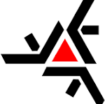

Computação Gráfica
Lucas Alves UEM, Departamento de Informática
Três pontos distintos e não colineares do plano.
Vértices
Superfícies
Números dos vértices em sentido anti-horário visto de fora (regra da mão direita).